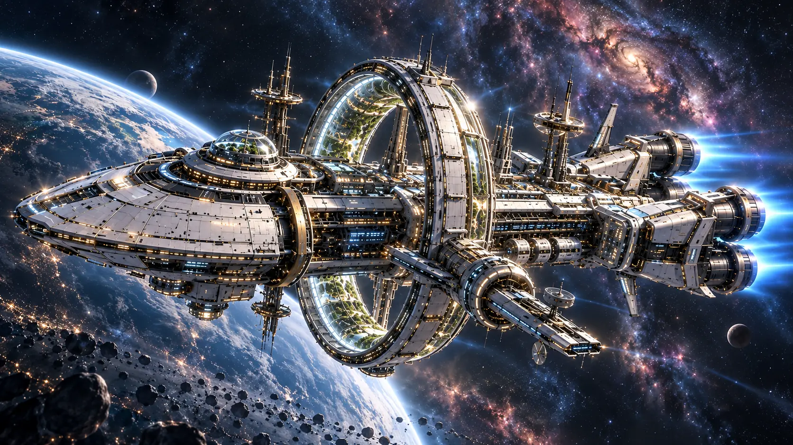
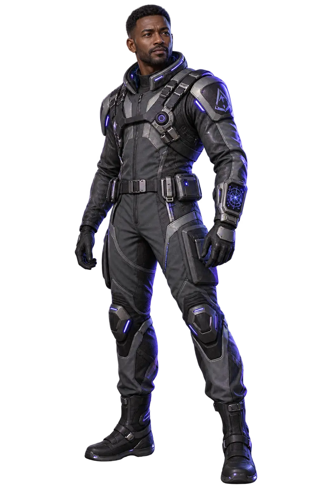

ONE LAST SIGNAL
One more signal. One more chance.

MARCUS · NAVIGATION
Three worlds behind us. None could sustain human life. Then, just as the bridge falls silent, the receiver detects an unidentified signal.
Press PLAY to enable sound and begin.